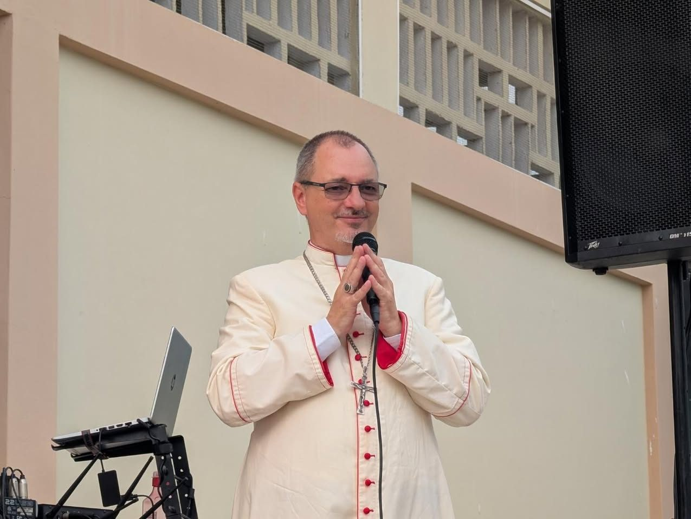
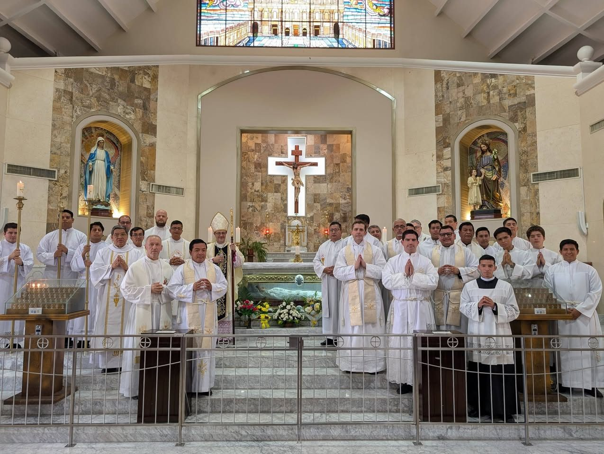

Una diócesis joven, en camino
Nacimos el 2 de febrero de 2022, en el norte del Guayas, entre el río Daule y los arrozales. Somos una Iglesia que sale al encuentro.
«Movilizar para Evangelizar»
- 12cantones
- 30parroquias
- 4zonas pastorales

Nuestro obispo
Mons. Cristóbal Kudławiec
Primer obispo de Daule. Nació en Polonia y es sacerdote desde 1995.
- Ordenado sacerdote el 25 de mayo de 1995, en la diócesis de Rzeszów (Polonia)
- Nombrado obispo de Daule el 22 de abril de 2022
- Ordenación episcopal y toma de posesión: 25 de junio de 2022
«Iesu, in te confido»
Su lema episcopal: «Jesús, en ti confío».

Nuestra patrona
Santa Narcisa de Jesús
Narcisa de Jesús Martillo Morán nació en Nobol, en nuestra tierra. Es la patrona de la diócesis desde el 7 de diciembre de 2024.
- Canonizada el 12 de octubre de 2008
- En la diócesis, su solemnidad se celebra el 9 de diciembre
- Cada año peregrinamos a su santuario, en Nobol
Nuestra catedral
Señor de los Milagros, Daule
La catedral guarda la imagen del Señor de los Milagros, el Cristo Negro de Daule. Su fiesta es el 14 de septiembre; en esos días la imagen sale en procesión por el río Daule. Parroquias de Daule
Desde 2022
Nuestra historia cabe todavía en una página
- 2 feb2022
Nace la diócesis
El papa Francisco erige la Diócesis de Daule con la bula «Suscipientes Misericordiam», con territorio de la arquidiócesis de Guayaquil.
- 31 mar2022
Misa de inauguración
Se da lectura a la bula de erección.
- 25 jun2022
Llega nuestro obispo
Mons. Cristóbal Kudławiec recibe la ordenación episcopal y toma posesión de la diócesis.
- 22–23 ene2024
I Asamblea Diocesana
En la Curia Diocesana, en Daule.
- 7 dic2024
Santa Narcisa, patrona
En Nobol, santa Narcisa de Jesús es proclamada patrona de la diócesis.
- ene2025
II Asamblea Diocesana
En la parroquia San Alberto Magno: «Peregrinamos reconociendo la presencia de Dios en nuestra historia».
- 26–28 ene2026
III Asamblea Diocesana
En San Alberto Magno. Comienza el Año Pastoral «Creo en ti, Señor Jesús».
- 25–27 ene2027
IV Asamblea Diocesana
La próxima: toda la diócesis evalúa el año y planifica el siguiente.
Asambleas diocesanas
Cada enero, toda la diócesis se sienta a la misma mesa
Sacerdotes, religiosas y laicos de todas las parroquias, pastorales y movimientos evalúan el año que termina y planifican el que empieza. De cada asamblea sale el plan pastoral y el lema del año.
«Creo en ti, Señor Jesús»
Año Pastoral 2026 · Jn 11, 25-26. Este año lo recorremos en cinco encuentros de formación kerigmática:
- MarzoJesús vive y me ama
- MayoMaría, mujer creyente
- JulioCreo en ti, Señor Jesús, presente en la Eucaristía
- SeptiembreJesucristo nos salva por su cruz y resurrección
- NoviembreCreo en la resurrección de la carne y la vida eterna
Curia diocesana
Ven a vernos
Para trámites, certificados y consultas. Si buscas horarios de misa o sacramentos, pregunta primero en tu parroquia.